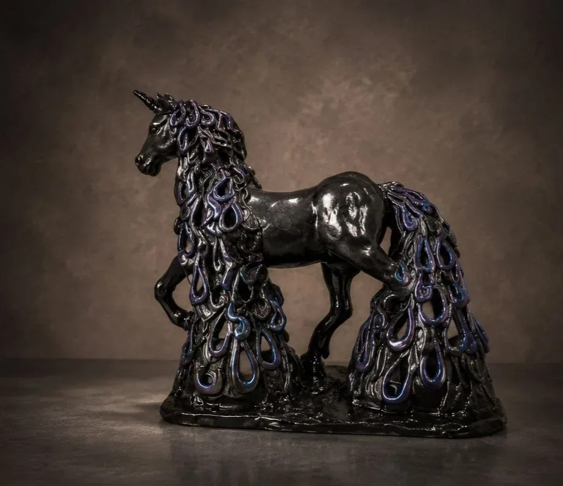
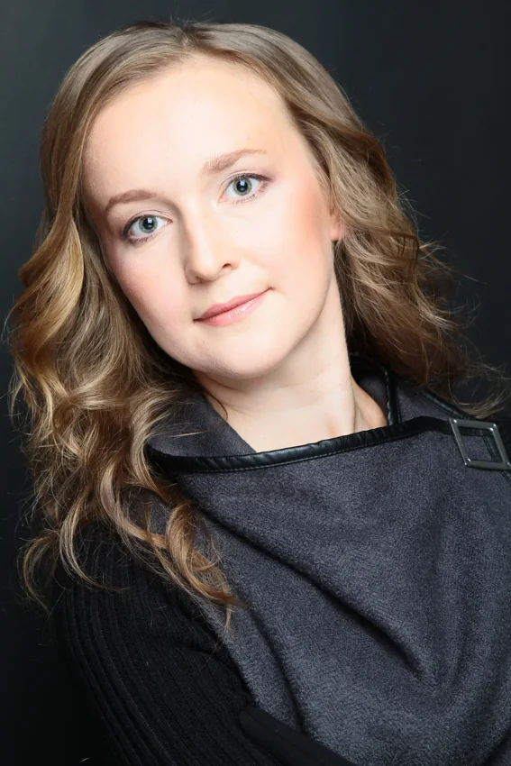
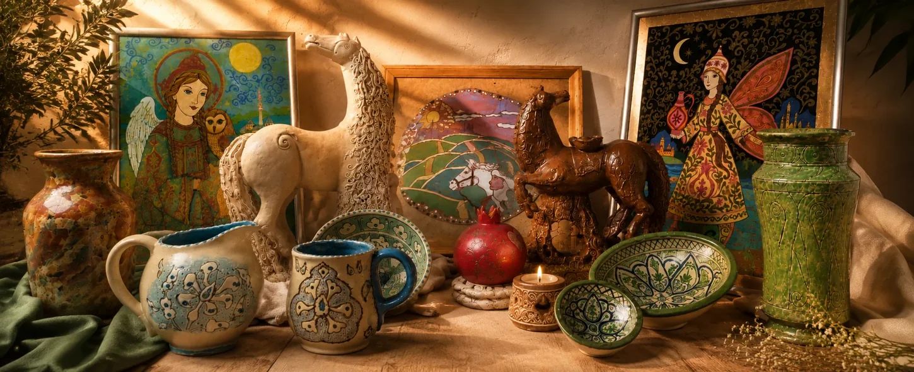

Художественная керамика · Казань
Сквозь века
Авторская керамика Елены Давлетшиной, вдохновлённая Волжской Булгарией, Золотой Ордой и древней Казанью.
Смотреть работы
Коллекция
Из глины и истории
Кони из серии «Атлар», ваза по мотивам альбарелло и сказочные подсвечники. Нажмите на фотографию, чтобы рассмотреть детали.
«Атлар» и альбарелло
Статуэтки ручной лепки и ваза с декором сграффито


«Мифический единорог»
Подсвечник ручной лепки, покрытый глазурью и эмалью

«Симург» и «Феникс»
Керамические подсвечники в виде мифических птиц

О мастерской
Елена
Давлетшина
Елена работает с керамикой больше двадцати лет. В мастерской «Сквозь века» она лепит вручную и работает на гончарном круге. Формы старинных сосудов и образы из легенд становятся основой её авторских изделий.
Карточка мастерской в ЦУМеМастер-классы
Керамика
своими руками
На занятиях можно познакомиться с ремеслом и попробовать расписать керамическую заготовку. О ближайших занятиях подскажут в ЦУМе.
Узнать о занятиях